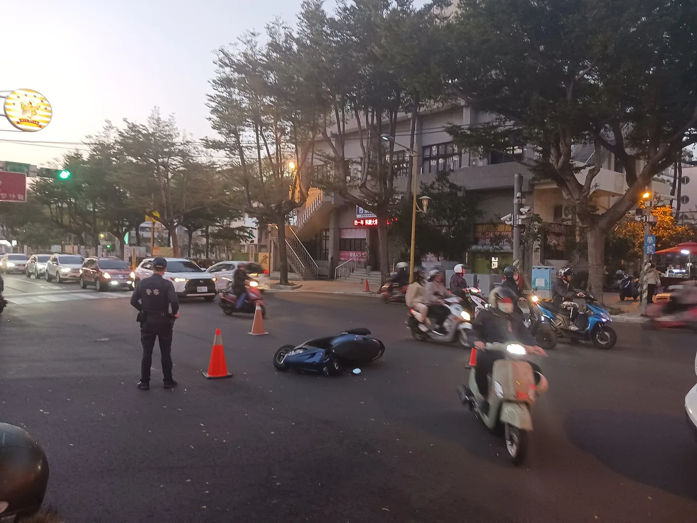
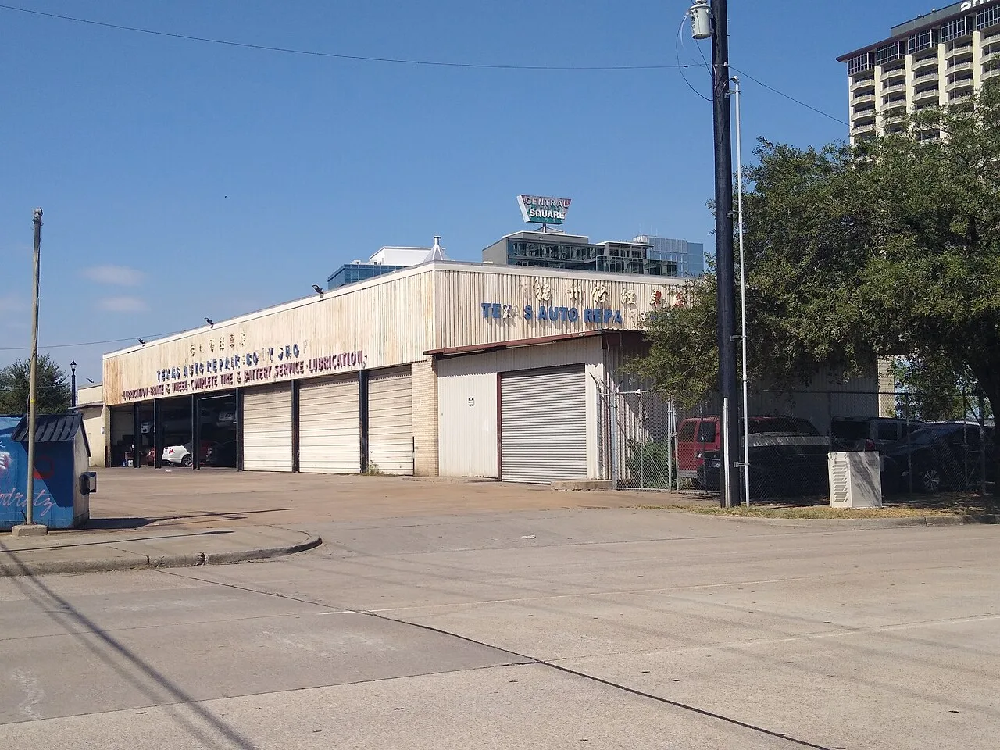
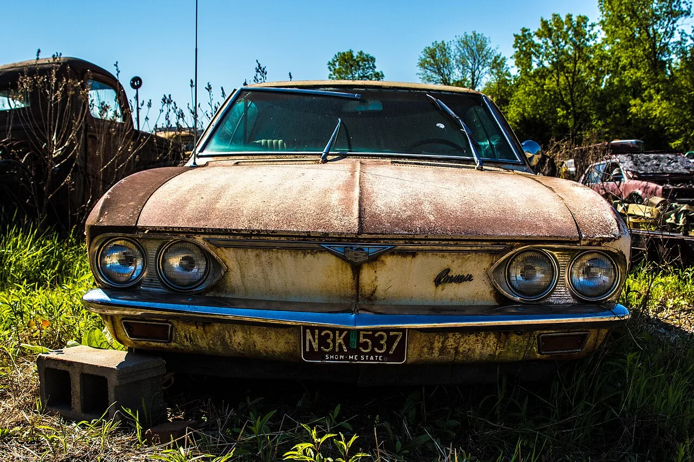

▲ 사고 수리 과정에서 어떤 부품이 들어가는지는 소유자가 확인하기 가장 어려운 영역이다
에어백은 한 번 터지고 끝나는 부품입니다. 사고를 겪은 차를 되살리려면 새로 넣어야 하고, 그 부품은 어딘가에서 사 와야 합니다.
그 어딘가가 문제였습니다. eBay가 9월 24일부터 에어백과 에어백 인플레이터, 스티어링휠 에어백 커버의 등록과 판매를 금지합니다. 위조 에어백이 실제 사망 사고로 이어진 뒤 나온 조치입니다.
1. 살 수 있었던 사고에서 8명이 죽었습니다
발단은 올해 초 미국 도로교통안전국(NHTSA)의 발표였습니다. 중국 지린성 데톈눠 자동차안전시스템이 만든 교체용 에어백 인플레이터가 관련된 사고에서, 생존이 가능했던 충돌임에도 운전자 8명이 사망했다는 내용입니다.
당국은 이 부품들이 불법 수입된 뒤 이전 충돌 사고를 겪은 차량의 수리에 사용된 것으로 보고 있습니다.
NHTSA는 이 "위험하고 규격 미달인 에어백 인플레이터"가 충돌 시 오작동하며 큰 금속 파편을 운전자의 가슴과 목, 눈, 얼굴로 날려보낸다고 경고했습니다. 보호 장치가 아니라 파편 살포 장치에 가깝다는 뜻입니다.

▲ 사고를 겪은 차가 다시 도로에 오를 때, 어떤 에어백이 들어갔는지는 겉으로 보이지 않는다 ⓒ Wikimedia Commons
2. 80%가 제대로 터지지 않았습니다
2025년에는 미시간주에서 한 남성이 eBay를 통해 위조 에어백을 판매한 혐의로 기소됐습니다.
당시 미시간주 검찰은 위조 에어백의 80% 이상이 정상적으로 전개되지 않아 부상 또는 사망 위험을 높인다고 밝혔습니다. 그리고 미시간주 내에서만 약 8만 1000대의 차량에 위조 구속장치가 장착돼 있을 수 있다고 추정했습니다.
📍 숫자가 말하는 것
8만 1000대는 한 개 주의 추정치입니다.
위조 에어백은 겉모습과 커넥터가 정품과 유사하게 만들어집니다. 장착한 정비소도, 그 차를 산 다음 소유자도 알아채기 어렵습니다. 문제가 드러나는 시점이 대체로 충돌 순간이라는 것이 이 부품이 가진 위험의 본질입니다.
3. eBay가 닫은 문과 열어둔 문
eBay는 "이 제품들이 이용자에게 미칠 수 있는 위험에 대한 종합적 검토"를 거쳐 결정했다고 밝혔습니다.
| 구분 | 조치 |
|---|---|
| 에어백 | 등록·판매 금지 |
| 에어백 인플레이터 | 등록·판매 금지 |
| 스티어링휠 에어백 커버 | 등록·판매 금지 |
| 에어백 제어 유닛 | 미국 내 사전 승인 판매자만 |
| 충돌 센서 | 미국 내 사전 승인 판매자만 |
| 진단 모듈 | 미국 내 사전 승인 판매자만 |
| 탑승자 센서 | 미국 내 사전 승인 판매자만 |
| 미국 외 지역 | 에어백·인플레이터를 포함하지 않는 관련 부품은 계속 판매 가능 |
주목할 부분은 사전 승인 제한이 미국에만 적용된다는 점입니다. 미국 밖에서는 에어백과 인플레이터를 포함하지 않는 관련 부품이라면 모든 판매자가 계속 등록할 수 있습니다.
4. "한 플랫폼의 문제가 아니다"
위조 인플레이터와 관련해 세 건의 부당사망 소송을 제기한 로펌 모건앤모건은 이번 조치를 두고 "불법 위조 장치가 유통 경로에 진입해 차량에 장착되는 것을 막는 중요한 첫걸음"이라고 평가했습니다.
다만 같은 로펌은 단서를 붙였습니다. "문제는 한 플랫폼보다 더 깊은 곳에 있다"는 것입니다. eBay에서 사라진 물량이 다른 경로로 옮겨갈 뿐이라면, 위험의 총량은 줄지 않습니다.

▲ 부품 조달 경로가 불투명한 수리는 소유자가 결과를 확인할 수 없다 ⓒ Wikimedia Commons
5. 내 차는 어떻게 확인하나
가장 확실한 예방은 수리 단계에 있습니다. 평판이 확인된 정비소, 그리고 정품 또는 검증된 교체 부품을 쓰는 곳에서 수리를 받는 것입니다.
중고차를 살 때는 조건이 더 까다롭습니다. 이전 소유자의 수리 이력을 직접 확인할 수 없기 때문입니다. 다만 차량 이력 조회를 통해 사고 시 에어백이 전개된 적이 있는지는 대체로 확인할 수 있습니다.
📍 중고차 구매 시 확인 순서
1 — 차량 이력에서 에어백 전개 이력 확인
2 — 전개 이력이 있다면 교체된 에어백의 출처를 확인
3 — 확인이 어렵다면 정비소 점검을 받아 정품 여부를 판단
에어백 경고등이 켜지지 않는다는 사실만으로는 정품임이 보장되지 않습니다.
6. 이 조치를 어떻게 읽을 것인가
플랫폼이 특정 품목을 통째로 닫는 일은 흔치 않습니다. 판매 수수료를 포기하는 결정이기 때문입니다.
eBay가 그 선택을 했다는 것은, 위조 에어백 유통이 개별 판매자 제재로는 통제되지 않는 수준에 이르렀다는 방증에 가깝습니다. 국내 중고 부품 시장 역시 같은 위험에서 완전히 자유롭다고 보기는 어렵습니다.

▲ 중고 부품 유통은 자원 순환의 축이지만, 안전 부품에서는 출처 확인이 전제돼야 한다 ⓒ Wikimedia Commons